![]()
pacman::p_load(
Seurat,
scCustomize,
tidyverse,
patchwork,
here
)Single cell RNA sequencing
Single cell RNA sequencing measures the RNA molecules within each cell of a give sample. This information provides a snapshot of the transcriptone when the cells are harvested. it can: - reveal complex and rare cell populations - uncover regulatory relations between genes - track the trajectories of distict cell lineages in development
Commonly platform
- 10x genomics
- BD Rhapsody
Read single cell data
This data is from PBMC 3K guided tutorial.
- barcodes.tsv - cell information
- genes.tsv - gene information
- matrix.mtx - expression information
Option1: read data one by one (samll size data)
pacman::p_load(data.table, Matrix)
### Read the data
gene <- fread("./pbmc3k/genes.tsv", data.table = FALSE, header = FALSE)
head(gene)
## V1 V2
## 1 ENSG00000243485 MIR1302-10
## 2 ENSG00000237613 FAM138A
## 3 ENSG00000186092 OR4F5
## 4 ENSG00000238009 RP11-34P13.7
## 5 ENSG00000239945 RP11-34P13.8
## 6 ENSG00000237683 AL627309.1
barcode <- fread("./pbmc3k/barcodes.tsv", data.table = FALSE, header = FALSE)
head(barcode)
## V1
## 1 AAACATACAACCAC-1
## 2 AAACATTGAGCTAC-1
## 3 AAACATTGATCAGC-1
## 4 AAACCGTGCTTCCG-1
## 5 AAACCGTGTATGCG-1
## 6 AAACGCACTGGTAC-1
mat <- as.data.frame(readMM("./pbmc3k/matrix.mtx"))
### Combine the three data
colnames(mat) <- barcode$V1 # cell barcode
mat$gene_id <- gene$V2 # gene name
mat <- mat[!duplicated(mat$gene_id), ] # remove duplicate genes
mat <- mat |>
select(gene_id, head(colnames(mat),-1)) # relocate gene id to first column
head(as_tibble(mat))
## # A tibble: 6 × 2,701
## gene_id `AAACATACAACCAC-1` `AAACATTGAGCTAC-1` `AAACATTGATCAGC-1`
## <chr> <dbl> <dbl> <dbl>
## 1 MIR1302-10 0 0 0
## 2 FAM138A 0 0 0
## 3 OR4F5 0 0 0
## 4 RP11-34P13.7 0 0 0
## 5 RP11-34P13.8 0 0 0
## 6 AL627309.1 0 0 0
## # ℹ 2,697 more variables: `AAACCGTGCTTCCG-1` <dbl>, `AAACCGTGTATGCG-1` <dbl>,
## # `AAACGCACTGGTAC-1` <dbl>, `AAACGCTGACCAGT-1` <dbl>,
## # `AAACGCTGGTTCTT-1` <dbl>, `AAACGCTGTAGCCA-1` <dbl>,
## # `AAACGCTGTTTCTG-1` <dbl>, `AAACTTGAAAAACG-1` <dbl>,
## # `AAACTTGATCCAGA-1` <dbl>, `AAAGAGACGAGATA-1` <dbl>,
## # `AAAGAGACGCGAGA-1` <dbl>, `AAAGAGACGGACTT-1` <dbl>,
## # `AAAGAGACGGCATT-1` <dbl>, `AAAGATCTGGGCAA-1` <dbl>, …Option2: Setup the Seurat object
pacman::p_load(Seurat)
### Load PBMC dataset
pbmc_data <- Read10X(data.dir = "./pbmc3k/")
### Init the seurat object with the raw (non-normalized data)
pbmc <- CreateSeuratObject(
counts = pbmc_data,
project = "pbmc3k",
min.cells = 3,
min.features = 200
)
## Warning: Feature names cannot have underscores ('_'), replacing with dashes
## ('-')
pbmc
## An object of class Seurat
## 13714 features across 2700 samples within 1 assay
## Active assay: RNA (13714 features, 0 variable features)What does data in a count matix look like?
pbmc_data[c("CD3D", "TCL1A", "MS4A1"), 1:30]
## 3 x 30 sparse Matrix of class "dgCMatrix"
## [[ suppressing 30 column names 'AAACATACAACCAC-1', 'AAACATTGAGCTAC-1', 'AAACATTGATCAGC-1' ... ]]
##
## CD3D 4 . 10 . . 1 2 3 1 . . 2 7 1 . . 1 3 . 2 3 . . . . . 3 4 1 5
## TCL1A . . . . . . . . 1 . . . . . . . . . . . . 1 . . . . . . . .
## MS4A1 . 6 . . . . . . 1 1 1 . . . . . . . . . 36 1 2 . . 2 . . . .The . values in the matrix represent 0s (no molecules detected). Since most values in an scRNA-seq matrix are 0, Seurat uses a sparse-matrix representation whenever possible. This results in significant memory and speed savings for Drop-seq/inDrop/10x data.
### SeuratData
# devtools::install_github('satijalab/seurat-data')
library(SeuratData)
# AvailableData()
# InstallData("pbmc3k")
data("pbmc3k")
pbmc3k
## An object of class Seurat
## 13714 features across 2700 samples within 1 assay
## Active assay: RNA (13714 features, 0 variable features)Pre-processing data
The standard pre-processing workflow for scRNA-seq data including:
- Selection and filteration of cells based on QC matrics
- Data normalization and scaling
- Detection of highly variable features
QC and selecting cells for further analysis
- The number of unique genes detected in each cell
- Low quality cells or empty droplets will often have few gens
- Cell doublets or multiplets exhibit an aberrantly high gene count
- Similarly, the total number of molecules detected within a cell
- The percentage of reads that map to the mitochondrial genome
- Low quality /dying cells often exhibit entensive mitochondrial contamination
- Calculate mitochondrial QC matrics with
PercentageFeatureSet()function, which calculate the percentage of counts originating from a set of features - Mitochondrial genes are start with
MT-
pbmc3k[["percent.mt"]] <- PercentageFeatureSet(pbmc3k, pattern = "^MT-")
### Show QC metrics for the first 5 cells
head(pbmc3k@meta.data, 5)
## orig.ident nCount_RNA nFeature_RNA seurat_annotations percent.mt
## AAACATACAACCAC pbmc3k 2419 779 Memory CD4 T 3.0177759
## AAACATTGAGCTAC pbmc3k 4903 1352 B 3.7935958
## AAACATTGATCAGC pbmc3k 3147 1129 Memory CD4 T 0.8897363
## AAACCGTGCTTCCG pbmc3k 2639 960 CD14+ Mono 1.7430845
## AAACCGTGTATGCG pbmc3k 980 521 NK 1.2244898Visualize QC metrics and filter cells - Filter cells that have unique feture over 2500 or less than 200 - Filter cells have 5% mitochondrial counts
### Visualize QC metrics as a violin plot
VlnPlot(
pbmc3k,
features = c("nFeature_RNA", "nCount_RNA", "percent.mt"),
ncol = 3
)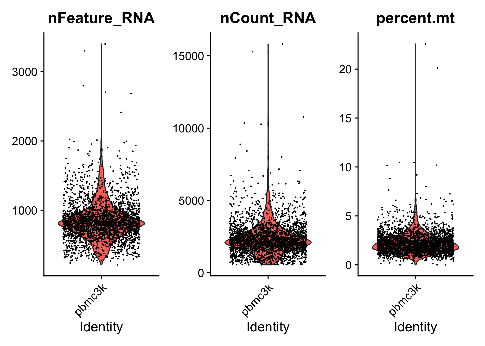
### Visualize feature-feature relationships
p1 <- FeatureScatter(
pbmc3k,
feature1 = "nCount_RNA",
feature2 = "percent.mt"
)
p2 <- FeatureScatter(
pbmc3k,
feature1 = "nCount_RNA",
feature2 = "nFeature_RNA")
p1 + p2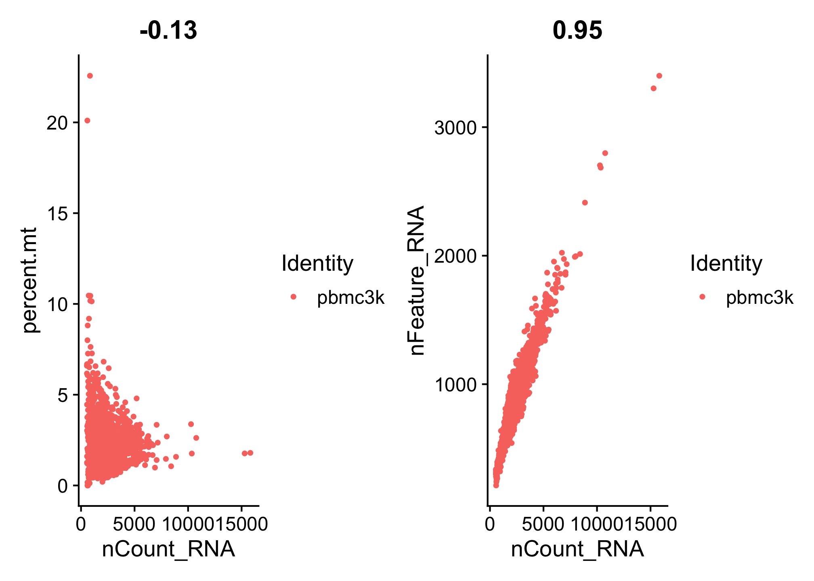
pbmc <- subset(
pbmc3k,
subset = nFeature_RNA > 200 & nFeature_RNA < 2500 & percent.mt < 5
)Normalizaing the data
After removing unwanted cells from the dataset, the next stop is to normalize the data. The {Seurat} employ a global-scaling normalization method that normalizes the feature expression measurements for each cell by the total expression, multiplies this by a scale factor and log-transforms the result. Normalized values are stored in pbmc[["RNA"]]@data.
pbmc <- NormalizeData(
pbmc,
normalization.method = "LogNormalize",
scale.factor = 10000
)Identification of highly variable features
The next is to calculate a subset of features that exhibit high cell-to-cell variation in the dataset. - i.e, they are highly expressed in some cells, and lowly expressed in other cells. - Focus on these genes in downstream analysis helps to highlight biological signal in single-cell datasets
pbmc <- FindVariableFeatures(pbmc, selection.method = "vst", nfeatures = 2000)
### Identify the 10 most highly variable genes
top10 <- head(VariableFeatures(pbmc), 10)
### Plot variable features with or without labels
p1 <- VariableFeaturePlot(pbmc)
p2 <- LabelPoints(plot = p1, points = top10, repel = TRUE)
## When using repel, set xnudge and ynudge to 0 for optimal results
p1 + p2
## Warning: Transformation introduced infinite values in continuous x-axis
## Transformation introduced infinite values in continuous x-axis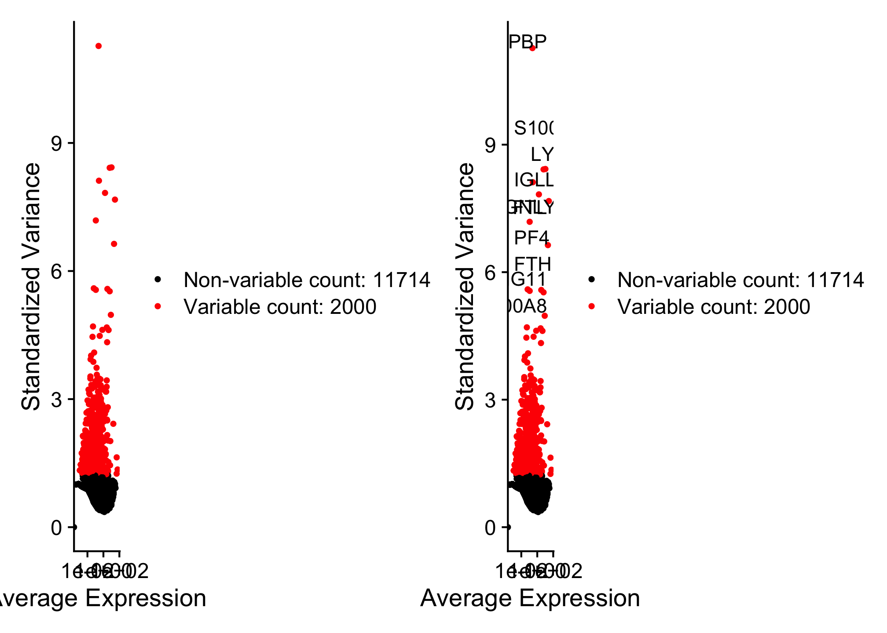
Scaling the data
Next, apply a linear transformation (“scaling”) that is a standard pre-processing step prior to dimensional reduction technique like PCA. - Shift the expresion of each gene, so that the mean expression across cells is 0 - Scale the expression of each gene, so that the variance across cells is 1. * This step gives equal weight in downstream analysis, so that highly-expressed genes do not dominate - The results of this are stored in pbmc[["RNA"]]@scale.data
all.genes <- rownames(pbmc)
pbmc <- ScaleData(pbmc, features = all.genes)
## Centering and scaling data matrixPerform linear dimensional reduction
pbmc <- RunPCA(pbmc, features = VariableFeatures(object = pbmc))
## PC_ 1
## Positive: CST3, TYROBP, LST1, AIF1, FTL, FTH1, LYZ, FCN1, S100A9, TYMP
## FCER1G, CFD, LGALS1, S100A8, CTSS, LGALS2, SERPINA1, IFITM3, SPI1, CFP
## PSAP, IFI30, SAT1, COTL1, S100A11, NPC2, GRN, LGALS3, GSTP1, PYCARD
## Negative: MALAT1, LTB, IL32, IL7R, CD2, B2M, ACAP1, CD27, STK17A, CTSW
## CD247, GIMAP5, AQP3, CCL5, SELL, TRAF3IP3, GZMA, MAL, CST7, ITM2A
## MYC, GIMAP7, HOPX, BEX2, LDLRAP1, GZMK, ETS1, ZAP70, TNFAIP8, RIC3
## PC_ 2
## Positive: CD79A, MS4A1, TCL1A, HLA-DQA1, HLA-DQB1, HLA-DRA, LINC00926, CD79B, HLA-DRB1, CD74
## HLA-DMA, HLA-DPB1, HLA-DQA2, CD37, HLA-DRB5, HLA-DMB, HLA-DPA1, FCRLA, HVCN1, LTB
## BLNK, P2RX5, IGLL5, IRF8, SWAP70, ARHGAP24, FCGR2B, SMIM14, PPP1R14A, C16orf74
## Negative: NKG7, PRF1, CST7, GZMB, GZMA, FGFBP2, CTSW, GNLY, B2M, SPON2
## CCL4, GZMH, FCGR3A, CCL5, CD247, XCL2, CLIC3, AKR1C3, SRGN, HOPX
## TTC38, APMAP, CTSC, S100A4, IGFBP7, ANXA1, ID2, IL32, XCL1, RHOC
## PC_ 3
## Positive: HLA-DQA1, CD79A, CD79B, HLA-DQB1, HLA-DPB1, HLA-DPA1, CD74, MS4A1, HLA-DRB1, HLA-DRA
## HLA-DRB5, HLA-DQA2, TCL1A, LINC00926, HLA-DMB, HLA-DMA, CD37, HVCN1, FCRLA, IRF8
## PLAC8, BLNK, MALAT1, SMIM14, PLD4, P2RX5, IGLL5, LAT2, SWAP70, FCGR2B
## Negative: PPBP, PF4, SDPR, SPARC, GNG11, NRGN, GP9, RGS18, TUBB1, CLU
## HIST1H2AC, AP001189.4, ITGA2B, CD9, TMEM40, PTCRA, CA2, ACRBP, MMD, TREML1
## NGFRAP1, F13A1, SEPT5, RUFY1, TSC22D1, MPP1, CMTM5, RP11-367G6.3, MYL9, GP1BA
## PC_ 4
## Positive: HLA-DQA1, CD79B, CD79A, MS4A1, HLA-DQB1, CD74, HIST1H2AC, HLA-DPB1, PF4, SDPR
## TCL1A, HLA-DRB1, HLA-DPA1, HLA-DQA2, PPBP, HLA-DRA, LINC00926, GNG11, SPARC, HLA-DRB5
## GP9, AP001189.4, CA2, PTCRA, CD9, NRGN, RGS18, CLU, TUBB1, GZMB
## Negative: VIM, IL7R, S100A6, IL32, S100A8, S100A4, GIMAP7, S100A10, S100A9, MAL
## AQP3, CD2, CD14, FYB, LGALS2, GIMAP4, ANXA1, CD27, FCN1, RBP7
## LYZ, S100A11, GIMAP5, MS4A6A, S100A12, FOLR3, TRABD2A, AIF1, IL8, IFI6
## PC_ 5
## Positive: GZMB, NKG7, S100A8, FGFBP2, GNLY, CCL4, CST7, PRF1, GZMA, SPON2
## GZMH, S100A9, LGALS2, CCL3, CTSW, XCL2, CD14, CLIC3, S100A12, RBP7
## CCL5, MS4A6A, GSTP1, FOLR3, IGFBP7, TYROBP, TTC38, AKR1C3, XCL1, HOPX
## Negative: LTB, IL7R, CKB, VIM, MS4A7, AQP3, CYTIP, RP11-290F20.3, SIGLEC10, HMOX1
## LILRB2, PTGES3, MAL, CD27, HN1, CD2, GDI2, CORO1B, ANXA5, TUBA1B
## FAM110A, ATP1A1, TRADD, PPA1, CCDC109B, ABRACL, CTD-2006K23.1, WARS, VMO1, FYB
### Examine and visualize PCA results in a few different ways
print(pbmc[["pca"]], dim = 1:5, nfeatures = 5)
## PC_ 1
## Positive: CST3, TYROBP, LST1, AIF1, FTL
## Negative: MALAT1, LTB, IL32, IL7R, CD2
## PC_ 2
## Positive: CD79A, MS4A1, TCL1A, HLA-DQA1, HLA-DQB1
## Negative: NKG7, PRF1, CST7, GZMB, GZMA
## PC_ 3
## Positive: HLA-DQA1, CD79A, CD79B, HLA-DQB1, HLA-DPB1
## Negative: PPBP, PF4, SDPR, SPARC, GNG11
## PC_ 4
## Positive: HLA-DQA1, CD79B, CD79A, MS4A1, HLA-DQB1
## Negative: VIM, IL7R, S100A6, IL32, S100A8
## PC_ 5
## Positive: GZMB, NKG7, S100A8, FGFBP2, GNLY
## Negative: LTB, IL7R, CKB, VIM, MS4A7
VizDimLoadings(pbmc, dims = 1:2, reduction = "pca")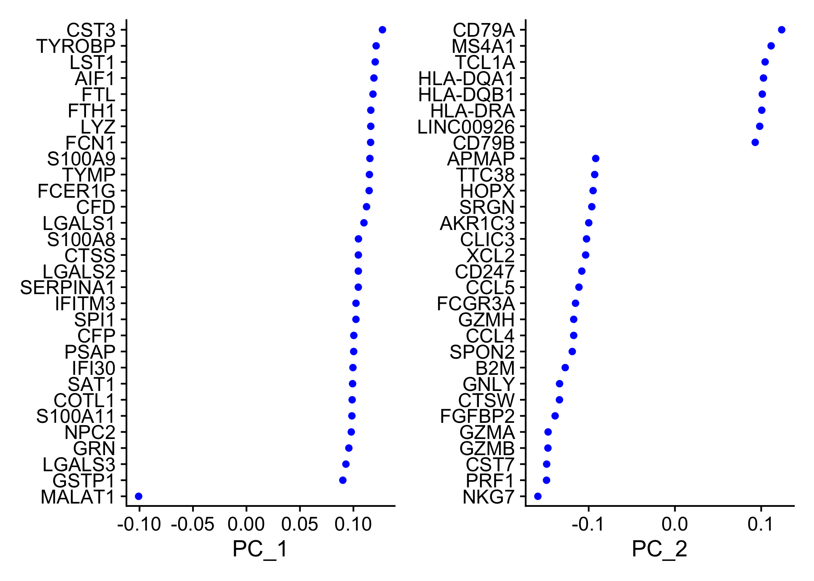
DimPlot(pbmc, reduction = "pca")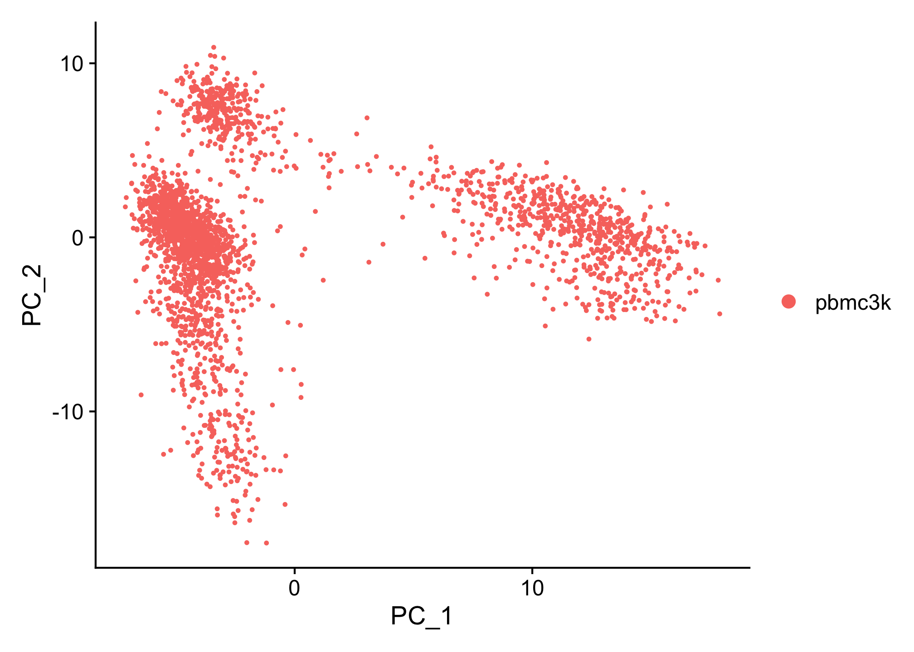
DimHeatmap(pbmc, dims = 1, cells = 500, balanced = TRUE)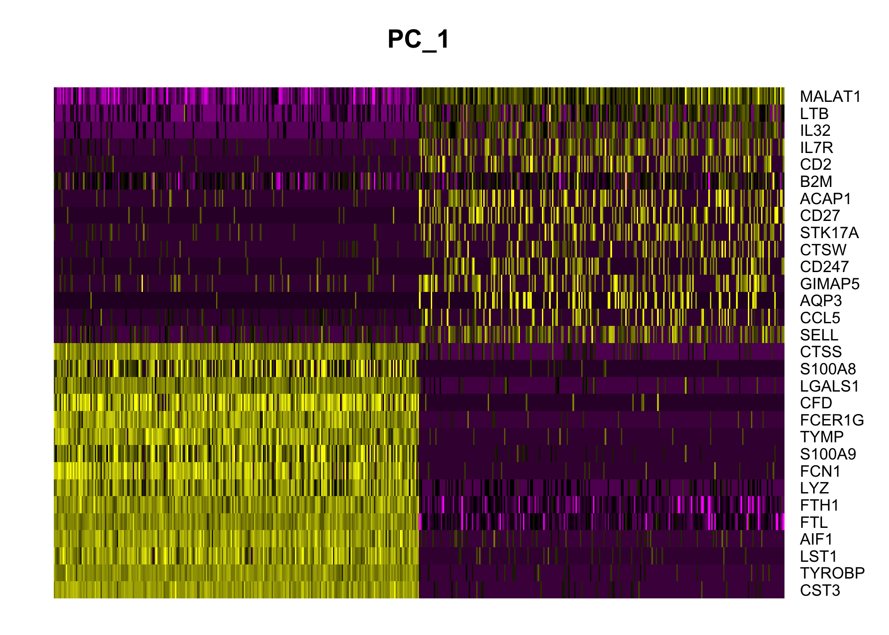
DimHeatmap(pbmc, dims = 1:15, cells = 500, balanced = TRUE)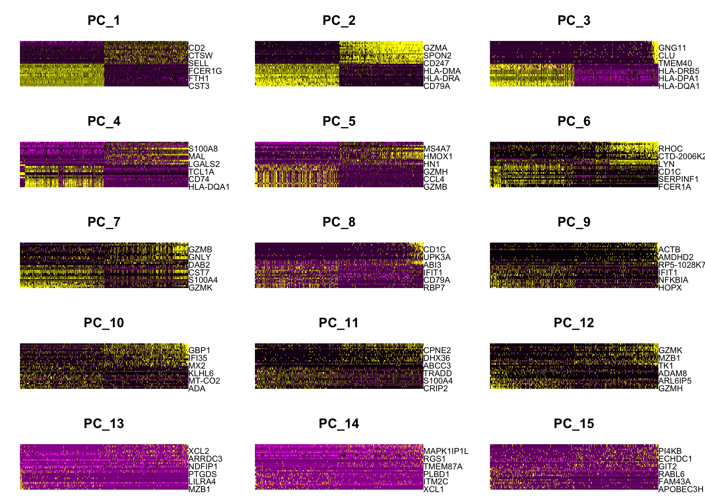
Determine the dimensionality of the dataset
To overcome the extensive technical noise in any single feature for scRNA-seq data, Seurat clusters cells based on their PCA scores, with each PC essentially representing a ‘metafeature’ that combines information across a correlated feature set. The top principal components therefore represent a robust compression of the dataset. However, how many components should we choose to include? 10? 20? 100?
pbmc <- JackStraw(pbmc, num.replicate = 100)
pbmc <- ScoreJackStraw(pbmc, dims = 1:20)
JackStrawPlot(pbmc, dims = 1:15)
## Warning: Removed 23493 rows containing missing values (`geom_point()`).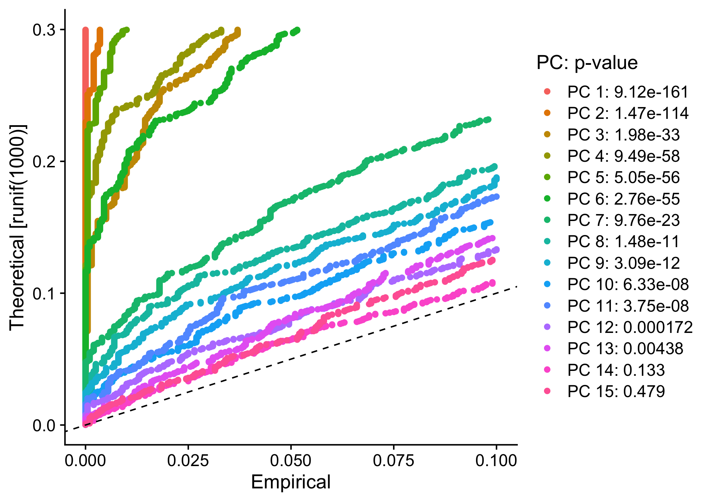
ElbowPlot(pbmc)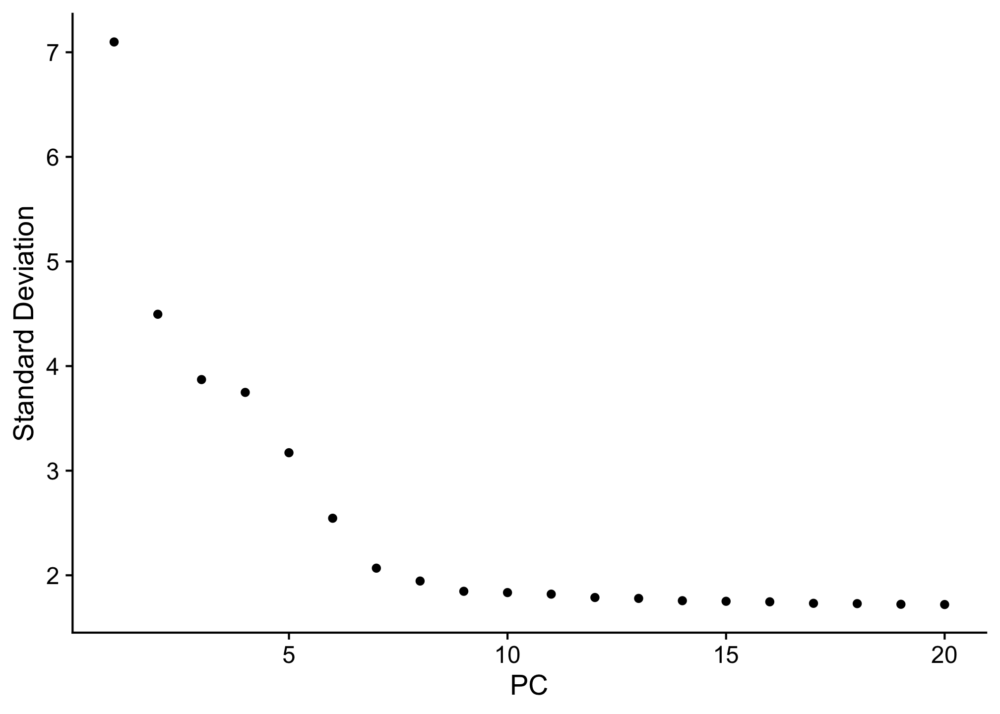
Cluster the cells
pbmc <- FindNeighbors(pbmc, dims = 1:10)
## Computing nearest neighbor graph
## Computing SNN
pbmc <- FindClusters(pbmc, resolution = 0.5)
## Modularity Optimizer version 1.3.0 by Ludo Waltman and Nees Jan van Eck
##
## Number of nodes: 2638
## Number of edges: 95927
##
## Running Louvain algorithm...
## Maximum modularity in 10 random starts: 0.8728
## Number of communities: 9
## Elapsed time: 0 seconds
### Look at cluster IDs of the first 5 cells
head(Idents(pbmc), 5)
## AAACATACAACCAC AAACATTGAGCTAC AAACATTGATCAGC AAACCGTGCTTCCG AAACCGTGTATGCG
## 2 3 2 1 6
## Levels: 0 1 2 3 4 5 6 7 8Non-linear dimensional reduction (UMAP/tSNE)
In order to place similar cells together in low-dimensional space, Seurat offers several non-linear dimensional reduction techniques, such as tSNE and UMAP, to visualize and explore these datasets.
pbmc <- RunUMAP(pbmc, dims = 1:10)
## Warning: The default method for RunUMAP has changed from calling Python UMAP via reticulate to the R-native UWOT using the cosine metric
## To use Python UMAP via reticulate, set umap.method to 'umap-learn' and metric to 'correlation'
## This message will be shown once per session
## 22:04:45 UMAP embedding parameters a = 0.9922 b = 1.112
## 22:04:45 Read 2638 rows and found 10 numeric columns
## 22:04:45 Using Annoy for neighbor search, n_neighbors = 30
## 22:04:45 Building Annoy index with metric = cosine, n_trees = 50
## 0% 10 20 30 40 50 60 70 80 90 100%
## [----|----|----|----|----|----|----|----|----|----|
## **************************************************|
## 22:04:45 Writing NN index file to temp file /var/folders/2c/9q3pg2295195bp3gnrgbzrg40000gn/T//RtmpSiE3LT/file7562b390da9
## 22:04:45 Searching Annoy index using 1 thread, search_k = 3000
## 22:04:45 Annoy recall = 100%
## 22:04:46 Commencing smooth kNN distance calibration using 1 thread with target n_neighbors = 30
## 22:04:46 Initializing from normalized Laplacian + noise (using irlba)
## 22:04:46 Commencing optimization for 500 epochs, with 105140 positive edges
## 22:04:48 Optimization finished
DimPlot(pbmc, reduction = "umap")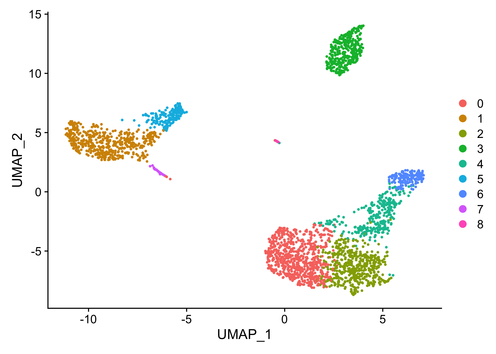
Finding differntially expressed features (cluster biomakers)
### Find all markers of cluster 2
cluster2_markers <- FindMarkers(pbmc, ident.1 = 2, min.pct = 0.25)
head(cluster2_markers, n = 5)
## p_val avg_log2FC pct.1 pct.2 p_val_adj
## IL32 2.892340e-90 1.2013522 0.947 0.465 3.966555e-86
## LTB 1.060121e-86 1.2695776 0.981 0.643 1.453850e-82
## CD3D 8.794641e-71 0.9389621 0.922 0.432 1.206097e-66
## IL7R 3.516098e-68 1.1873213 0.750 0.326 4.821977e-64
## LDHB 1.642480e-67 0.8969774 0.954 0.614 2.252497e-63
### Find all markers distinguishing cluster 5 from clusters 0 and 3
cluster5_markers <- FindMarkers(
pbmc, ident.1 = 5,
ident.2 = c(0, 3),
min.pct = 0.25)
head(cluster5_markers, n = 5)
## p_val avg_log2FC pct.1 pct.2 p_val_adj
## FCGR3A 8.246578e-205 4.261495 0.975 0.040 1.130936e-200
## IFITM3 1.677613e-195 3.879339 0.975 0.049 2.300678e-191
## CFD 2.401156e-193 3.405492 0.938 0.038 3.292945e-189
## CD68 2.900384e-191 3.020484 0.926 0.035 3.977587e-187
## RP11-290F20.3 2.513244e-186 2.720057 0.840 0.017 3.446663e-182
### Find markers for every cluster compared to all remaining cells,
### report only the positive ones
pbmc_markers <- FindAllMarkers(
pbmc, only.pos = TRUE,
min.pct = 0.25,
logfc.threshold = 0.25)
## Calculating cluster 0
## Calculating cluster 1
## Calculating cluster 2
## Calculating cluster 3
## Calculating cluster 4
## Calculating cluster 5
## Calculating cluster 6
## Calculating cluster 7
## Calculating cluster 8
pbmc_markers %>%
group_by(cluster) %>%
slice_max(n = 2, order_by = avg_log2FC)
## # A tibble: 18 × 7
## # Groups: cluster [9]
## p_val avg_log2FC pct.1 pct.2 p_val_adj cluster gene
## <dbl> <dbl> <dbl> <dbl> <dbl> <fct> <chr>
## 1 9.57e- 88 1.36 0.447 0.108 1.31e- 83 0 CCR7
## 2 3.75e-112 1.09 0.912 0.592 5.14e-108 0 LDHB
## 3 0 5.57 0.996 0.215 0 1 S100A9
## 4 0 5.48 0.975 0.121 0 1 S100A8
## 5 1.06e- 86 1.27 0.981 0.643 1.45e- 82 2 LTB
## 6 2.97e- 58 1.23 0.42 0.111 4.07e- 54 2 AQP3
## 7 0 4.31 0.936 0.041 0 3 CD79A
## 8 9.48e-271 3.59 0.622 0.022 1.30e-266 3 TCL1A
## 9 5.61e-202 3.10 0.983 0.234 7.70e-198 4 CCL5
## 10 7.25e-165 3.00 0.577 0.055 9.95e-161 4 GZMK
## 11 3.51e-184 3.31 0.975 0.134 4.82e-180 5 FCGR3A
## 12 2.03e-125 3.09 1 0.315 2.78e-121 5 LST1
## 13 3.13e-191 5.32 0.961 0.131 4.30e-187 6 GNLY
## 14 7.95e-269 4.83 0.961 0.068 1.09e-264 6 GZMB
## 15 1.48e-220 3.87 0.812 0.011 2.03e-216 7 FCER1A
## 16 1.67e- 21 2.87 1 0.513 2.28e- 17 7 HLA-DPB1
## 17 1.92e-102 8.59 1 0.024 2.63e- 98 8 PPBP
## 18 9.25e-186 7.29 1 0.011 1.27e-181 8 PF4
cluster0_markers <- FindMarkers(
pbmc, ident.1 = 0,
logfc.threshold = 0.25,
test.use = "roc",
only.pos = TRUE)
VlnPlot(pbmc, features = c("MS4A1", "CD79A"))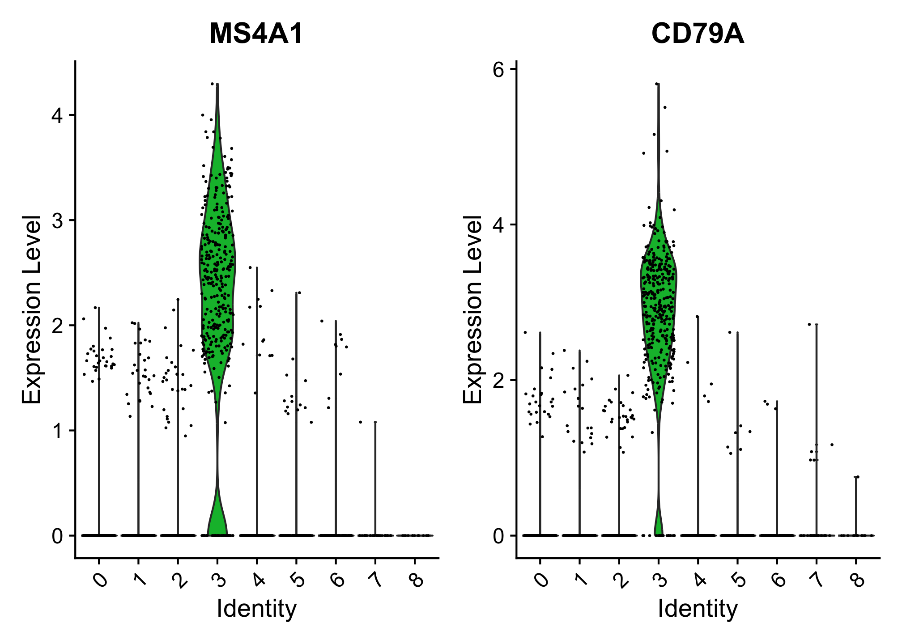
### Plot raw counts as well
VlnPlot(pbmc, features = c("NKG7", "PF4"), slot = "counts", log = TRUE)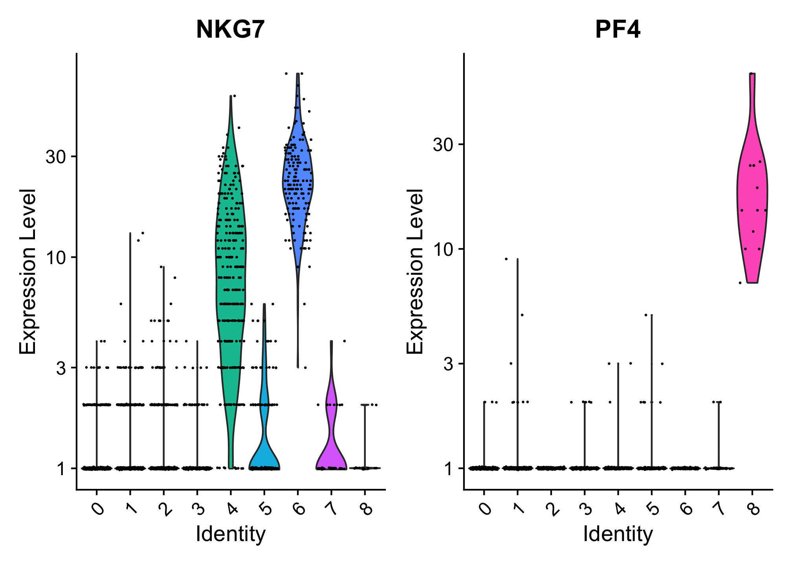
FeaturePlot(
pbmc,
features = c(
"MS4A1", "GNLY", "CD3E", "CD14", "FCER1A", "FCGR3A", "LYZ", "PPBP","CD8A"
)
)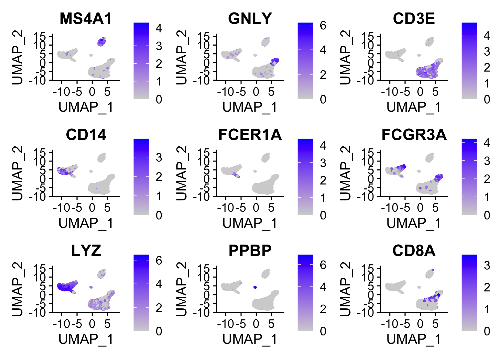
Assigning cell type identity to clusters
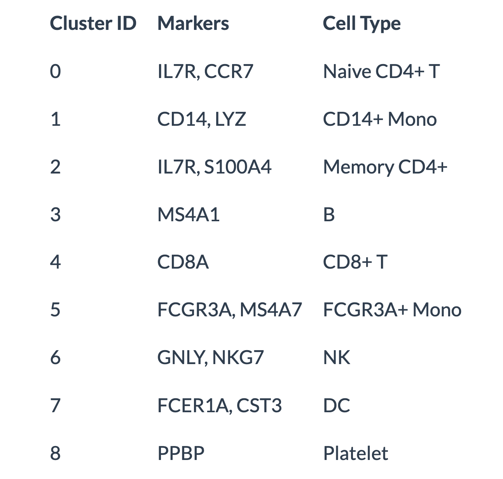
## Reference- SEURAT: R toolkit for single cell genomics
- Seurat for Single Cell RNA-Seq Data
- Batch Effect in Single-Cell RNA-Seq: Frequently Asked Questions and Answers ## Session Info
sessionInfo()
## R version 4.3.1 (2023-06-16)
## Platform: aarch64-apple-darwin20 (64-bit)
## Running under: macOS Ventura 13.5.1
##
## Matrix products: default
## BLAS: /Library/Frameworks/R.framework/Versions/4.3-arm64/Resources/lib/libRblas.0.dylib
## LAPACK: /Library/Frameworks/R.framework/Versions/4.3-arm64/Resources/lib/libRlapack.dylib; LAPACK version 3.11.0
##
## locale:
## [1] en_US.UTF-8/en_US.UTF-8/en_US.UTF-8/C/en_US.UTF-8/en_US.UTF-8
##
## time zone: Asia/Singapore
## tzcode source: internal
##
## attached base packages:
## [1] stats graphics grDevices utils datasets methods base
##
## other attached packages:
## [1] pbmc3k.SeuratData_3.1.4 SeuratData_0.2.2 Matrix_1.6-0
## [4] data.table_1.14.8 here_1.0.1 patchwork_1.1.3
## [7] lubridate_1.9.2 forcats_1.0.0 stringr_1.5.0
## [10] dplyr_1.1.2 purrr_1.0.1 readr_2.1.4
## [13] tidyr_1.3.0 tibble_3.2.1 ggplot2_3.4.2
## [16] tidyverse_2.0.0 scCustomize_1.1.3 SeuratObject_4.1.3
## [19] Seurat_4.3.0.1
##
## loaded via a namespace (and not attached):
## [1] RColorBrewer_1.1-3 rstudioapi_0.15.0 jsonlite_1.8.7
## [4] shape_1.4.6 magrittr_2.0.3 spatstat.utils_3.0-3
## [7] ggbeeswarm_0.7.2 farver_2.1.1 rmarkdown_2.23
## [10] GlobalOptions_0.1.2 vctrs_0.6.3 ROCR_1.0-11
## [13] spatstat.explore_3.2-1 paletteer_1.5.0 janitor_2.2.0
## [16] htmltools_0.5.5 sctransform_0.3.5 parallelly_1.36.0
## [19] KernSmooth_2.23-21 htmlwidgets_1.6.2 ica_1.0-3
## [22] plyr_1.8.8 plotly_4.10.2 zoo_1.8-12
## [25] igraph_1.5.1 mime_0.12 lifecycle_1.0.3
## [28] pkgconfig_2.0.3 R6_2.5.1 fastmap_1.1.1
## [31] snakecase_0.11.1 fitdistrplus_1.1-11 future_1.33.0
## [34] shiny_1.7.5 digest_0.6.33 colorspace_2.1-0
## [37] rematch2_2.1.2 rprojroot_2.0.3 tensor_1.5
## [40] irlba_2.3.5.1 labeling_0.4.2 progressr_0.14.0
## [43] timechange_0.2.0 fansi_1.0.4 spatstat.sparse_3.0-2
## [46] httr_1.4.6 polyclip_1.10-4 abind_1.4-5
## [49] compiler_4.3.1 withr_2.5.0 R.utils_2.12.2
## [52] MASS_7.3-60 rappdirs_0.3.3 tools_4.3.1
## [55] vipor_0.4.5 lmtest_0.9-40 beeswarm_0.4.0
## [58] httpuv_1.6.11 future.apply_1.11.0 goftest_1.2-3
## [61] R.oo_1.25.0 glue_1.6.2 nlme_3.1-162
## [64] promises_1.2.0.1 grid_4.3.1 Rtsne_0.16
## [67] cluster_2.1.4 reshape2_1.4.4 generics_0.1.3
## [70] gtable_0.3.3 spatstat.data_3.0-1 tzdb_0.4.0
## [73] R.methodsS3_1.8.2 hms_1.1.3 sp_2.0-0
## [76] utf8_1.2.3 spatstat.geom_3.2-4 RcppAnnoy_0.0.21
## [79] ggrepel_0.9.3 RANN_2.6.1 pillar_1.9.0
## [82] limma_3.56.2 ggprism_1.0.4 later_1.3.1
## [85] circlize_0.4.15 splines_4.3.1 lattice_0.21-8
## [88] survival_3.5-5 deldir_1.0-9 tidyselect_1.2.0
## [91] miniUI_0.1.1.1 pbapply_1.7-2 knitr_1.43
## [94] gridExtra_2.3 scattermore_1.2 xfun_0.39
## [97] matrixStats_1.0.0 stringi_1.7.12 lazyeval_0.2.2
## [100] yaml_2.3.7 pacman_0.5.1 evaluate_0.21
## [103] codetools_0.2-19 cli_3.6.1 uwot_0.1.16
## [106] xtable_1.8-4 reticulate_1.30 munsell_0.5.0
## [109] Rcpp_1.0.11 globals_0.16.2 spatstat.random_3.1-5
## [112] png_0.1-8 ggrastr_1.0.2 parallel_4.3.1
## [115] ellipsis_0.3.2 listenv_0.9.0 viridisLite_0.4.2
## [118] scales_1.2.1 ggridges_0.5.4 crayon_1.5.2
## [121] leiden_0.4.3 rlang_1.1.1 cowplot_1.1.1